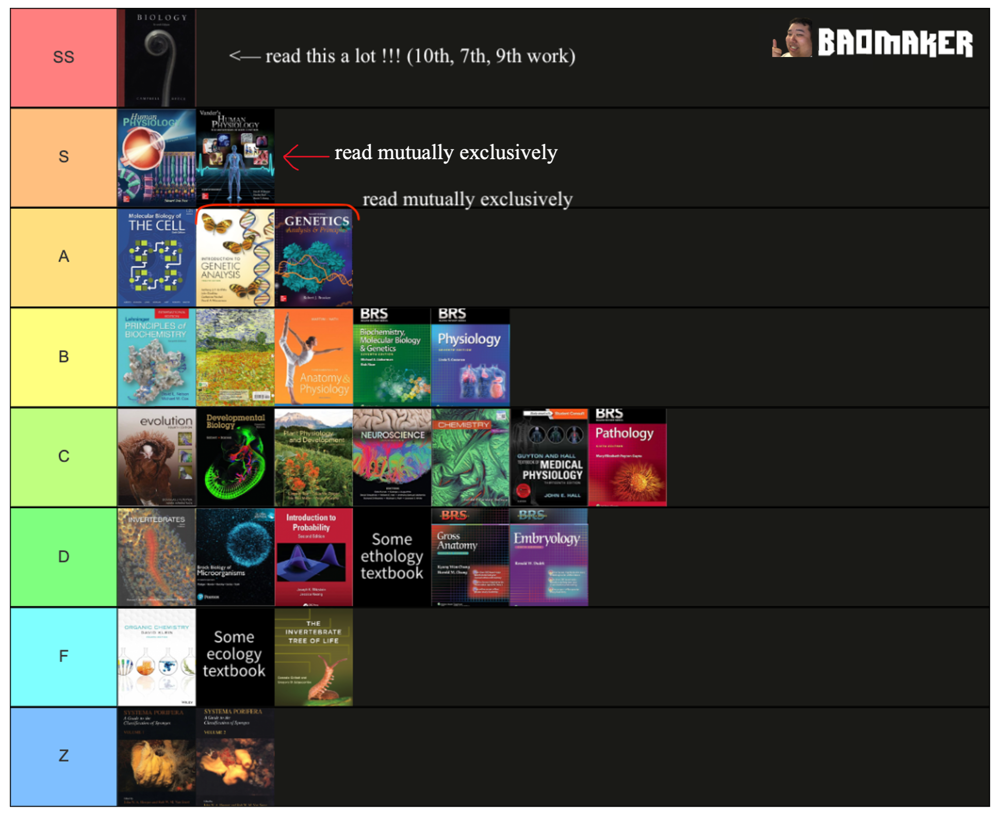

Kevin's Textbook Tier List

Every year I take stock of where the contest seems to stand and what topics are covered most heavily. One of the clearest distillations of that accumulated wisdom is our annual (hopefully!) textbook tier list. While last year Kevin tiered books by his personal preference for each book, this year the list is focused on books of a particular type (e.g. genetics books). However some individual books have been listed. Below we detail some of the choices made on this tier list.
To see where to buy these books, see our recommended textbooks page.
Editor's Note: the textbook tierlist ended up not being an annual occurence :(
SS Tier: Campbells Biology
Please see our other blog post where we review this excellent textbook.
S Tier: Vanders Physiology / Fox Physiology
Physiology books are probably the most useful for biology competitions currently. Because of the proliferation of more application/figure interpretation based Molecular Biology questions, especially on the semifinals, it is more important than ever to have a strong grasp of physiology.
-
Vander's Human Physiology
-
Fox's Human Physiology
A Tier: Lehninger Biochemistry demoted
In the last iteration of this tier list (available to community members in the Baology Discord Server), Lehninger’s Biochemistry featured as one of the A tier books. However, after further consideration it has been demoted. The books in this tier are good ones to read after reading the higher tier ones, and we just feel that the marginal benefit of biochemistry is very limited especially for students without a strong grasp of chemistry. Instead, focusing on bolstering genetics problem solving skills, or on molecular biology techniques and findings, will help students more substantially.
-
Albert's Molecular Biology of The Cell
-
Griffith's Introduction to Genetic Analysis
-
Brooker's Genetics: Analysis & Principles
B Tier: A Hodgepodge of Popular Books
B tier is home to Raven’s Plants (formerly an S tier back in Kevin’s day!), the two best BRS books and a general rep for all anatomy and physiology books (Martini’s and Marieb’s are good examples). We should note that the BRS books are best used as review material and not for learning new material.
-
Lehninger's Principles of Biochemistry
-
Raven's Biology of Plants
-
Martini's Fundamentals of Anatomy & Physiology
-
BRS Biochemistry, Molecular Biology & Genetics
-
BRS Physiology
C–F Tier: Should I read them?
While the books in the lower tiers may be less useful, especially if you have an interest in any of the topics you definitely should! Your passion will carry you through it and because biology is so interconnected learning less pertinent information will still help you form links to other topics and areas of biology.
-
C tier
-
Futuyma's Evolution
-
Gilbert's Developmental Biology
-
Taiz's Plant Physiology & Development
-
Purves' Neuroscience
-
Zumdahl & Zumdahl Chemistry
-
Guyton's Physiology
-
BRS Pathology
-
-
D tier
-
Brusca's Invertebrates
-
Brock's Biology of Microorganisms
-
Blitzstein's Introduction to Probability (any statistics textbook)
-
Any ethology textbook
-
BRS Gross Anatomy
-
BRS Embryology
-
-
F tier
-
Klein's Organic Chemistry
-
Any ecology textbook
-
Any earth science textbook
-
Giribet & Edgecombe's Invertebrate Tree of Life
-
Z Tier: Systema Porifera
This is here as a meme. This is a 2 volume work on sponges. It costs upwards of a thousand dollars for a physical copy. This will absolutely not help you on any exam. Please do not buy this book.